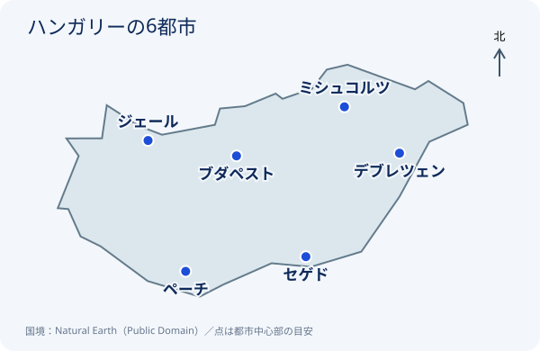
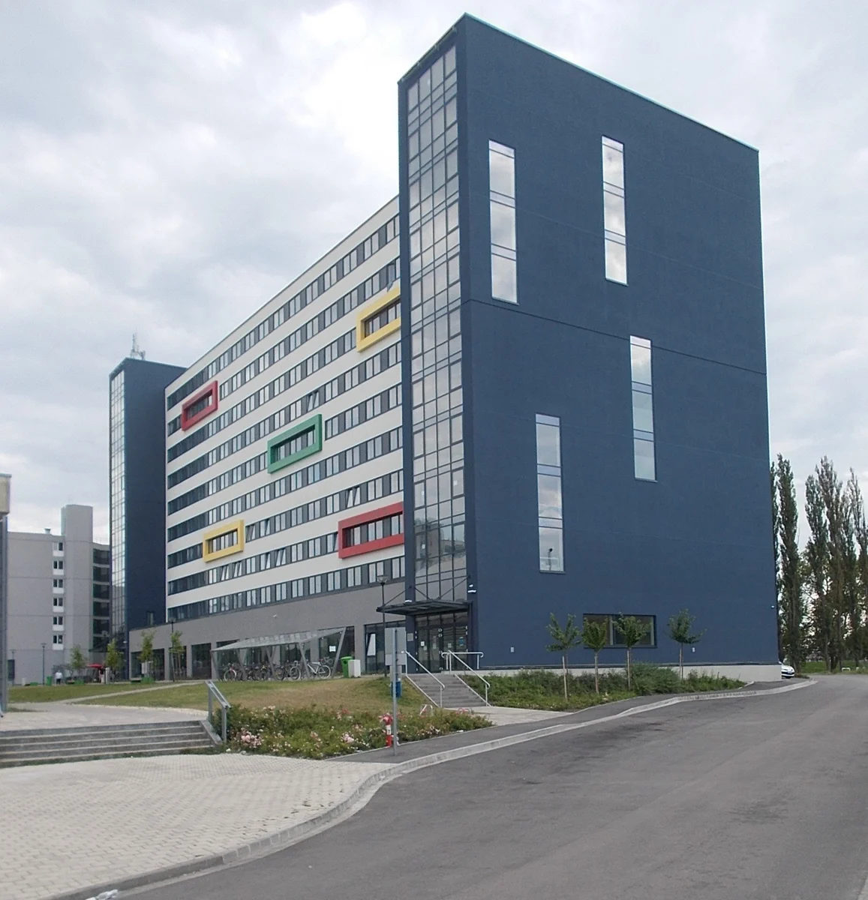
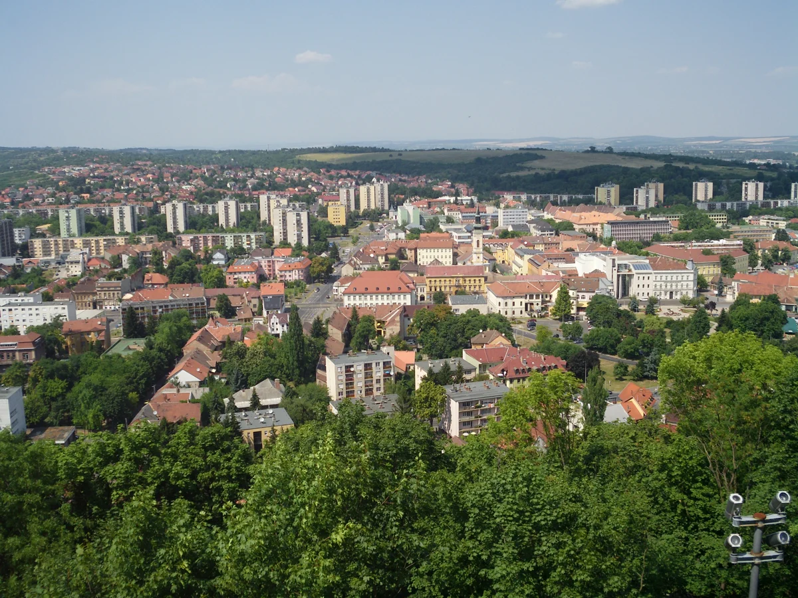

まず知っておきたいこと
このページの金額は、授業料ではなく、留学中の家賃や食費などの生活費です。大学が案内する生活費と、公式留学情報サイト「Study in Hungary」の都市別家賃を、分けて紹介します。
確認日：2026年10月25日。日本円は1 Ft＝0.48円、1ユーロ＝180円、1米ドル＝155円で計算した比較用の概算です。最新の為替レートではありません。大学の生活費目安には住居費が含まれる場合があるため、上の家賃を重ねて加算しないでください。
奨学金をもらえば、学生寮は無料？
Stipendium Hungaricum（ハンガリー政府奨学金）の受給者は、大学が寮の部屋を用意できる場合、無料で利用できます。ただし、寮には定員があり、必ず入居できるわけではありません。
寮に入れない場合や寮を選ばない場合は、月40,000 Ft（約1.9万円）の住居補助が支給されます。これは家賃の全額を負担する制度ではなく、差額は自己負担です。
また、学士・修士課程の生活費補助は月43,700 Ft（約2.1万円）です。寮を利用できる場合でも、食費などすべてが無料になるわけではありません。
無料の寮と月40,000 Ftの住居補助を両方受け取る制度ではありません。
下では、6都市それぞれの場所・街の写真・家賃・大学の案内を紹介します。家賃は学生寮／シェア住居／1人暮らしを分けて掲載しています。
Study in Hungaryの6都市比較ツールを見る ↗

ブダペスト Budapest
首都特別区（県には属さない） ｜ ハンガリー中央北部
この都市の家賃（1か月）
出典：Study in Hungary 都市別比較。シェア住居・1人暮らしは光熱費込み。寮費は複数の寮の参考平均で、奨学金受給者への請求額ではありません。掲載値の更新日は不明です。
この都市の大学が案内する生活費


ブダペスト経済大学（BUEB）
家賃・食費・交通費などを含む、大学の生活費目安。
大学の公式ページを見る ↗コルヴィヌス大学
大学が示す生活費の目安。
大学の公式ページを見る ↗ブダペスト工科経済大学（BME）
住居400ユーロと食費など170〜270ユーロを本記事で合算（570〜670ユーロ）。保険料は別です。原典に2019/20学年の案内も残るため、最新予算は大学に確認してください。
大学の公式ページを見る ↗エトヴェシュ・ロラーンド大学（ELTE）
大学の生活費ページに掲載された賃貸住宅の家賃。生活費総額ではなく、食費・交通費は別です。ページの日付は2016年で、金額の更新時期は不明です。
大学の公式ページを見る ↗デブレツェン Debrecen
ハイドゥー・ビハル県 ｜ 東部
この都市の家賃（1か月）
出典：Study in Hungary 都市別比較。シェア住居・1人暮らしは光熱費込み。寮費は複数の寮の参考平均で、奨学金受給者への請求額ではありません。掲載値の更新日は不明です。
この都市の大学が案内する生活費

デブレツェン大学
住居・食費・教材・市内交通などを含む目安。
大学の公式ページを見る ↗ジェール Győr
ジェール・モション・ショプロン県 ｜ 北西部
この都市の家賃（1か月）
出典：Study in Hungary 都市別比較。シェア住居・1人暮らしは光熱費込み。寮費は複数の寮の参考平均で、奨学金受給者への請求額ではありません。掲載値の更新日は不明です。
この都市の大学が案内する生活費

セーチェーニ・イシュトヴァーン大学
上の住居費はStudy in Hungaryの参考額です。食費などを含む予算は、大学や現役生に確認してください。
大学の公式ページを見る ↗ミシュコルツ Miskolc
ボルショド・アバウーイ・ゼンプレーン県 ｜ 北東部

この都市の家賃（1か月）
出典：Study in Hungary 都市別比較。シェア住居・1人暮らしは光熱費込み。寮費は複数の寮の参考平均で、奨学金受給者への請求額ではありません。掲載値の更新日は不明です。
この都市の大学が案内する生活費
ミシュコルツ大学
上の住居費はStudy in Hungaryの参考額です。食費などを含む予算は、大学や現役生に確認してください。
大学の公式ページを見る ↗ペーチ Pécs
バラニャ県 ｜ 南西部
この都市の家賃（1か月）
出典：Study in Hungary 都市別比較。シェア住居・1人暮らしは光熱費込み。寮費は複数の寮の参考平均で、奨学金受給者への請求額ではありません。掲載値の更新日は不明です。
この都市の大学が案内する生活費

ペーチ大学
大学が案内する最低限の月額生活費。家賃・食費などを想定しています。
大学の公式ページを見る ↗セゲド Szeged
チョングラード・チャナード県 ｜ 南部
この都市の家賃（1か月）
出典：Study in Hungary 都市別比較。シェア住居・1人暮らしは光熱費込み。寮費は複数の寮の参考平均で、奨学金受給者への請求額ではありません。掲載値の更新日は不明です。
この都市の大学が案内する生活費
セゲド大学
住居200〜500ユーロ、食費350ユーロ。大学の学部ページの項目を合算したもので、光熱費・交通費・授業料は含みません。
大学の公式ページを見る ↗「奨学金があればお金が余る」は本当？
私自身、留学前にnoteやYouTubeで「Stipendium Hungaricumをもらえば、お金が余る」という話を見聞きしました。
当時の物価を調べた時点で「そんなに余裕があるはずはない」と疑問に思っていました。実際にハンガリーで生活してみても、奨学金だけで生活費を賄うのは簡単ではありませんでした。
数年前の一人の体験談が、今の物価や自分の生活に当てはまるとは限りません。留学を初めて考える高校生が、その話だけで必要なお金を判断してしまうことを避けたいと考えています。
だからこのページでは、個人の体験談ではなく、大学や公式留学情報サイトが示す金額を紹介しています。ただし、公式ページも更新日が古い場合があるため、出発前には大学に最新の寮費や住居条件を確認してください。
出典・円換算について
出典：Study in Hungary、Stipendium Hungaricum、各大学の公式案内（大学ごとにリンク）。
日本円は比較しやすいように 1 Ft＝0.48円、1ユーロ＝180円、1米ドル＝155円で計算した参考額です。最新の為替レートではありません。大学ごとに費用の対象が異なるため、生活費全体・住居費だけ・住居＋食費を明確に区別しています。
確認日：2026年10月25日。原典の更新日が不明な金額は、現在の募集家賃や2026年度の確定寮費を示しません。写真は各掲載元の実写を使用し、表示時にトリミングしています。既存の縮小画像はサイズ調整・圧縮済みです。CC BY-SA対象写真は各リンク先のライセンスに従います。